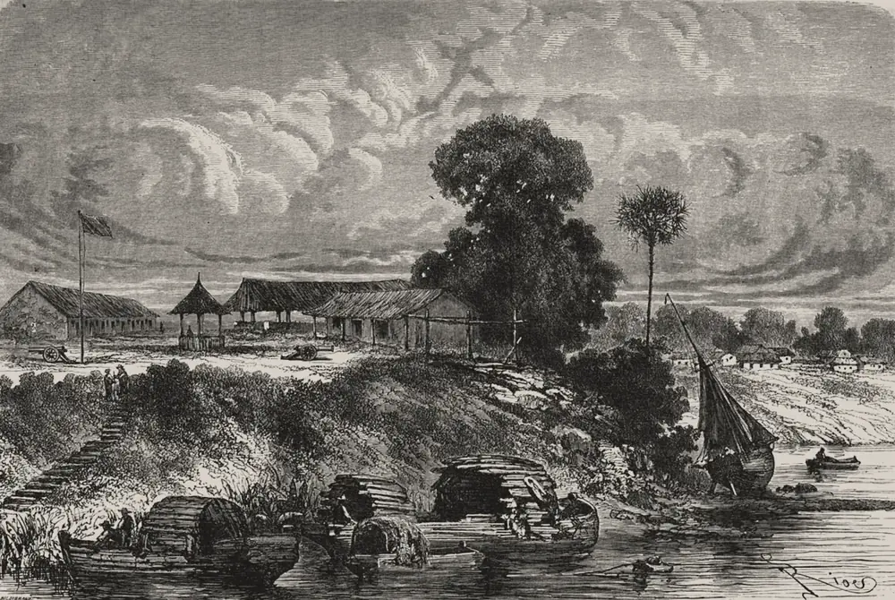

· Edición 19 · 5 min de lectura
Brasil vuelve a votar el 25: lo que se juega Colombia

Grabado de Hildibrand según dibujo de Édouard Riou, 1867 · Dominio público, vía Wikimedia Commons
Brasil vuelve a votar el 25: lo que se juega Colombia
En pocas palabras. Brasil, el vecino más grande de Colombia, votó el domingo y no definió presidente: Flávio Bolsonaro y Lula da Silva van a segunda vuelta el 25 de octubre. Allá se decide algo que aquí se siente: el comercio, la selva que compartimos, la frontera amazónica y hasta parte de la lluvia de los Andes.
Qué pasó. Con todas las mesas contadas, según el TSE, la autoridad electoral de Brasil, Flávio Bolsonaro, senador e hijo del expresidente Jair Bolsonaro, sacó 47,03% de los votos válidos. Lula, el presidente, sacó 45,16%. Ninguno pasó de la mitad. Las encuestas ponían a Lula adelante; las urnas dijeron otra cosa.
Brasil comparte con Colombia unos 1.645 kilómetros de frontera, casi toda de selva, según la Cancillería.
El comercio: compramos más de lo que vendemos. En 2024, según la base Comtrade de Naciones Unidas, Colombia le vendió a Brasil unos 1.930 millones de dólares, sobre todo combustibles y plásticos, y le compró 3.360 millones: carros, camiones, maquinaria. Por cada 100 dólares que le vendemos, le compramos 174.
- Flávio Bolsonaro propone, según resúmenes de su programa en la prensa brasileña, abrir el comercio de forma gradual, entrar a la OCDE (un club de países con reglas económicas comunes) y acercarse a Estados Unidos y Argentina.
- Lula propone reforzar el Mercosur, el bloque comercial del sur, y la integración suramericana.
La selva y la lluvia. Piense en una regadera que se recarga sola. Los árboles de la Amazonía sueltan agua al aire, el viento la lleva hacia el occidente, llueve, los árboles la vuelven a soltar, y así hasta chocar con los Andes. Son los "ríos voladores".
- Un estudio colombiano de 2022 rastreó de dónde viene la humedad de la lluvia en los Andes y el Caribe: sobre todo de tierra firme, no del mar. Del norte de la Amazonía llega hasta 17% en los meses de mitad de año.
- Otro, de 2025, de la Universidad de São Paulo, concluyó que la tala explica cerca de tres cuartas partes de la lluvia que se perdió en la temporada seca de la Amazonía brasileña entre 1985 y 2020.
La edición de hoy sobre El Niño cuenta qué pasa cuando falta el agua. Parte de esa agua nace en una selva que está, sobre todo, en Brasil.
Allá la tala viene bajando. Según el INPE, el instituto espacial brasileño, entre 2022 y 2025 se redujo a la mitad: de 11.594 a 5.796 kilómetros cuadrados al año. Aun así, lo de 2025 es más de tres veces el área de Bogotá. (Conocimiento general.)
Fuente: INPE, sistema PRODES (2025 es estimación)
Ver datos
| km² | |
|---|---|
| 2022 | 11.594 |
| 2023 | 9.064 |
| 2024 | 6.518 |
| 2025 | 5.796 |
- Lula propone deforestación neta cero en 2030: lo que se tumbe se compensa con bosque restaurado.
- Flávio Bolsonaro propone acabar la deforestación ilegal en 2029, con satélites e inteligencia artificial, y pagarle a quien conserve. En agosto dijo que no cree que el cambio climático sea real, según Axios.
La frontera. Leticia y Tabatinga son casi una sola ciudad, con más de 110.000 habitantes. Por el río pasan cocaína, oro y fauna, y se disputan las rutas grupos brasileños, como el Comando Vermelho, y colombianos. En 2023, Tabatinga tuvo 95,9 homicidios por cada 100.000 habitantes y Leticia 31,4, según la Global Initiative, una organización que estudia el crimen organizado. El International Crisis Group calculó en mayo que el crimen organizado está en al menos 67% de los municipios amazónicos de seis países.
- Flávio Bolsonaro propone declarar terroristas a las bandas criminales y crear una fuerza de élite militar para las fronteras.
- Lula propone una reforma constitucional de seguridad, un Ministerio de Seguridad Pública y una Policía Federal más fuerte.
Venezuela y migración. Colombia acoge cerca de 2,84 millones de venezolanos y Brasil unos 800.000, según R4V, la plataforma de agencias que los atiende. Tras la captura de Nicolás Maduro por Estados Unidos, en enero, Lula dijo que debía ser juzgado en Venezuela; Flávio Bolsonaro celebró su caída. Lo que haga Brasil pesa en lo que siga allá.
Salud. En septiembre de 2025, la OPS reunió en Leticia a Colombia, Brasil y Venezuela para planes conjuntos contra la malaria y el Chagas: los mosquitos no piden pasaporte. Y Brasil aprobó en noviembre de 2025 la primera vacuna de una sola dosis contra el dengue, del Instituto Butantan. No encontramos propuestas de los finalistas sobre salud de frontera.
El clima de todos. En la COP30 de Belém, en noviembre de 2025, Brasil lanzó un fondo para pagar por mantener los bosques tropicales en pie, con más de 6.700 millones de dólares anunciados. Colombia y Brasil están en la OTCA, el tratado de los ocho países amazónicos, que en 2023 acordaron metas comunes contra la tala. Una selva que deja de hacer lluvia le falla al clima de todos.
Pero ojo. Un presidente no lo decide todo: el Congreso, los gobernadores y los mercados también mueven la selva. El récord de Lula convive con su apoyo a más petróleo, según Axios. Y Colombia también tumba selva: lo que pase en Brasil no reemplaza lo que se haga aquí.
Quién decide y cuándo
Quién decide. Los votantes de Brasil, en segunda vuelta, entre Flávio Bolsonaro y Lula da Silva. El ganador gobierna de 2027 a 2030. (Conocimiento general.)
Cuándo. El domingo 25 de octubre de 2026.
Cómo participar. No hay un canal para los colombianos: es una decisión de los brasileños. Lo que sí está en manos de Colombia es su parte del tratado amazónico y su propia tala.
Seguimiento de la decisión
Pendiente · plazo:
Votantes de Brasil: Elegir en segunda vuelta entre Flávio Bolsonaro y Luiz Inácio Lula da Silva al presidente de Brasil para 2027-2030.
En la primera vuelta del 4 de octubre, Flávio Bolsonaro sacó 47,03% de los votos válidos y Lula 45,16%, según el TSE.
La paradoja del día
Los dos finalistas prometen acabar con la deforestación. Uno, la neta, en 2030. El otro, la ilegal, en 2029. En el titular, la selva gana con cualquiera; en la letra pequeña, cada meta deja por fuera algo distinto.
Para conversar
La pregunta. Si usted pudiera hacerle una sola pregunta al próximo presidente de Brasil sobre algo que toca a Colombia, ¿sería sobre la selva, la frontera o lo que compramos y vendemos?
Para leer más
La vorágine, de José Eustasio Rivera (1924). La novela de los caucheros en la selva donde se tocan Colombia, Venezuela y Brasil. Ayuda a ver que la frontera amazónica lleva un siglo entre la riqueza que se saca y la gente que queda atrapada. Su autor murió en 1928 y el texto es de dominio público. Disponible en Santo & Seña
Brasil: una biografía, de Lilia M. Schwarcz y Heloisa M. Starling (2015; en español, Debate, 2016). Dos historiadoras cuentan Brasil desde la colonia hasta hoy: la esclavitud, los ciclos económicos, las dictaduras y la democracia. Ayuda a entender el país que vota el 25.
¿Le interesa ver las fuentes?
31 fuentes: 2 académicas, 7 oficiales, 2 de datos, 5 de organizaciones, 13 de prensa, 2 de referencia.
- Oficial Tribunal Superior Electoral de Brasil (TSE). Flávio Bolsonaro (PL) e Lula (PT) vão disputar o 2º turno para a Presidência da República
- Prensa Agência Brasil. Quando será o segundo turno das eleições? Veja a data
- Prensa Band. Eleições 2026: veja a diferença de votos entre Flávio e Lula no 1º turno
- Prensa The Rio Times. Flávio and Lula Head to Brazil Runoff, 99.9% Counted
- Prensa CNN. Brazil election heads to runoff between Bolsonaro and Lula, in campaign dominated by crime, corruption and Trump
- Prensa Axios. Brazil election 2026: Lula vs. Flávio Bolsonaro as Trump watches
- Oficial Cancillería de Colombia. Frontera terrestre Colombia-Brasil
- Datos Trading Economics, con datos de UN Comtrade. Colombia: exportaciones a Brasil
- Datos Trading Economics, con datos de UN Comtrade. Colombia: importaciones desde Brasil
- Prensa Terra. Brics, EUA, Mercosul: as propostas de Lula e Flávio Bolsonaro para política externa
- Prensa ND Mais. O programa de Flávio Bolsonaro não menciona Brics nem Mercosul: o que o candidato do PL propõe para o Brasil no mundo
- Académica Hydrological Processes (Escobar, Hoyos, Nieto y Villegas, 2022). La importancia de la evaporación continental para la lluvia en Colombia: isótopos estables y trayectorias de humedad
- Académica Nature Communications (Franco y otros, Universidad de São Paulo, 2025). Contribución de la deforestación y del cambio climático global a los cambios de lluvia y temperatura en la Amazonía brasileña
- Oficial INPE (Instituto Nacional de Pesquisas Espaciais). Nota técnica: taxa consolidada de desmatamento PRODES 2022 (11.594 km²)
- Oficial INPE. Taxa consolidada de desmatamento na Amazônia em 2022-2023 é de 9.064 km²
- Oficial INPE. Nota técnica: estimativa PRODES 2025
- Prensa O Liberal. Desmatamento na Amazônia em 2025 caiu 11,08% em relação a 2024, afirma Prodes/Inpe
- Organización Política por Inteiro. A agenda climática nos planos de governo dos presidenciáveis
- Referencia Plano de Governo 2026. Plano de governo de Flavio Bolsonaro 2026: o que propõe
- Referencia Plano de Governo 2026. Plano de governo de Lula 2026: o que propõe
- Oficial Organización Panamericana de la Salud (OPS). Colombia, Brasil y Venezuela fortalecen cooperación para enfrentar enfermedades transmisibles en la Amazonía
- Prensa Diário do Grande ABC. Anvisa aprova vacina da dengue do Butantan, a primeira de dose única no mundo
- Organización Global Initiative against Transnational Organized Crime. Illicit frontiers: criminal governance in the Amazon's tri-border region
- Organización International Crisis Group (informe 111, mayo de 2026). A Jungle Heist: Shielding the Amazon from Organised Crime
- Prensa Gazeta do Povo. As principais propostas de Flávio Bolsonaro para a segurança
- Prensa Congresso em Foco. Fim da 6x1, soberania e segurança: o plano de Lula para novo mandato
- Organización R4V, Plataforma de Coordinación Interagencial para Refugiados y Migrantes de Venezuela. América Latina y el Caribe: refugiados y migrantes venezolanos en la región, noviembre de 2025
- Prensa Al Jazeera. Brazil's Lula says Maduro should face trial in Venezuela, not US
- Prensa TMC. Flávio Bolsonaro comemora queda de Maduro: «A Venezuela voltará a ser livre!»
- Organización Tropical Forest Forever Facility (TFFF). La COP30 cierra con más de 6.700 millones de dólares para el TFFF
- Oficial Organización del Tratado de Cooperación Amazónica (OTCA). Conheça a Declaração de Belém assinada pelos países amazônicos na Cúpula
Glosario
- Segunda vuelta: nueva votación entre los dos más votados cuando ninguno pasa de la mitad de los votos válidos.
- Votos válidos: los votos por un candidato; no cuentan los nulos ni los blancos.
- TSE: Tribunal Superior Electoral, la autoridad que organiza y cuenta las elecciones en Brasil.
- Ríos voladores: corrientes de vapor de agua que salen de la selva amazónica y el viento lleva hacia el occidente y el sur, donde caen como lluvia.
- INPE y PRODES: el instituto espacial de Brasil y su sistema para medir con satélites la selva tumbada cada año, de agosto a julio.
- Deforestación neta cero: que la selva que se tumba se compense con la misma cantidad de bosque restaurado.
- Mercosur: bloque comercial de Argentina, Brasil, Paraguay, Uruguay y Bolivia; Colombia es país asociado.
- OTCA: Organización del Tratado de Cooperación Amazónica, de Bolivia, Brasil, Colombia, Ecuador, Guyana, Perú, Surinam y Venezuela.
- R4V: plataforma de agencias de la ONU y organizaciones que coordina la ayuda a migrantes y refugiados venezolanos.
Nota metodológica
Esta edición es un tema de contexto, según la regla del 5 de octubre de 2026 (RUTINA.md, sección 2b): no es un nudo, porque una elección es una competencia por el poder, pero toca a Colombia por canales concretos y tiene una decisión con fecha. La pidió el editor. Puntaje de impacto: alcance 3, gravedad 2, duración 3, cercanía 3 y decisión 3, para un total de 19 de 21 (gravedad y cercanía valen doble). Pasa el umbral de 17.
Hicimos unas 40 búsquedas en español, portugués e inglés. No pudimos abrir ningún documento completo, ni del TSE, ni del INPE, ni los estudios, ni la prensa: trabajamos con resúmenes y resultados de búsqueda, y no atribuimos a los estudios más de lo que dicen sus resúmenes. De 31 fuentes, 18 no son de prensa. No tomamos partido: las propuestas de cada finalista se cuentan con el mismo espacio y atribuidas a sus programas o declaraciones.
Quedó sin verificar o con límites:
- Resultados: 47,03% y 45,16% con 100% de las mesas, según el resumen del comunicado del TSE y la prensa brasileña. Con 99,96% contado, The Rio Times daba 47,04% y 45,15%. La diferencia exacta de votos no coincide entre fuentes (entre 2,2 y 2,4 millones); por eso no la damos. El tercero, Augusto Cury, sacó 2,89% según un solo medio (Fuente única; no verificado.).
- Las propuestas vienen de resúmenes de los programas en la prensa y en sitios que los recopilan; no leímos los programas completos. Uno de esos resúmenes anota que el programa de Flávio Bolsonaro no menciona el Mercosur ni los Brics; el de Lula también propone reforzar los Brics. La frase de Flávio Bolsonaro sobre el cambio climático la conocemos por Axios.
- El comercio de 2024 viene de la base Comtrade de Naciones Unidas, a través de Trading Economics; las cifras del DANE pueden diferir un poco. La cuenta de los 174 dólares es nuestra.
- La serie del INPE: 2022 y 2023 son tasas consolidadas; 2024 es la que cita la prensa al comparar; 2025 es estimación preliminar. La cuenta de "la mitad" y la comparación con Bogotá (1.775 kilómetros cuadrados de todo el distrito) son nuestras.
- El estudio de 2022 mide de dónde viene la humedad de la lluvia en Colombia; no mide cuánto cambiaría esa lluvia si se tala más en Brasil. El de 2025 cubre solo la Amazonía brasileña.
- Las cifras de homicidios de Leticia y Tabatinga son de la Global Initiative, una organización independiente de estudio del crimen; las del Crisis Group son estimaciones basadas en solicitudes de información, informes de inteligencia y entrevistas.
- Las cifras de migrantes son de R4V, de noviembre de 2025; pueden haber cambiado tras los hechos de enero en Venezuela.
El grabado es de Hildibrand según un dibujo de Édouard Riou, publicado en 1867 en la revista francesa Le Tour du monde con el relato del viaje de Paul Marcoy por el Amazonas, y muestra el puesto y el pueblo de Tabatinga; es de otra época y lo usamos para evocar la frontera que hoy comparten Tabatinga y Leticia. Le recortamos el marco del escaneo.
De los dos libros, uno está en Santo & Seña (La vorágine). Los elegimos por el tema y confirmamos autor, año y editorial en la ficha de la tienda y en resultados de búsqueda de editoriales y catálogos.